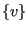
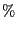

Next: *DASHPOT Up: Input deck format Previous: *CYCLIC SYMMETRY MODEL Contents
Keyword type: model definition, if structural damping: material
This card is used to define Rayleigh damping for implicit and explicit dynamic calculations (*DYNAMIC) and structural damping for steady state dynamics calculations (*STEADY STATE DYNAMICS).
For Rayleigh damping there are two required parameters: ALPHA and BETA.
Rayleigh damping is applied in a
global way, i.e. the damping matrix
is taken to be a linear combination of the
stiffness matrix
 and the mass matrix
and the mass matrix
 :
:
| (617) |
The damping force satisfies:
| (618) |
where  is the velocity vector. For Rayleigh damping only one *DAMPING card can be used in the input deck. It applies to the whole model.
For explicit dynamic calculations only mass proportional damping is allowed,
i.e.  must be zero.
must be zero.
For structural damping the damping is a material characteristic. Each material
can have its own damping value. There is one required parameter STRUCTURAL,
defining the value  of the damping. For structural damping the element
damping force is displacement dependent and satisfies:
of the damping. For structural damping the element
damping force is displacement dependent and satisfies:
| (619) |
where
, is the element stiffness matrix, and
is the element displacement vector. is the structural
damping value for the material of element  (default is zero). The global
damping force is assembled from the element damping forces.
(default is zero). The global
damping force is assembled from the element damping forces.
First line:
Example: *DAMPING,ALPHA=5000.,BETA=2.e-3
indicates that a damping matrix is created by multiplying the mass matrix with and adding it to the stiffness matrix multiplied by
Example: *DAMPING,STRUCTURAL=0.03
defines a structural damping value of 0.03 (3 ). This card must be part of a material description.
Example files: beamimpdy1, beamimpdy2.